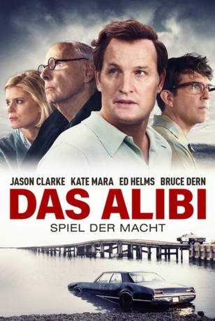
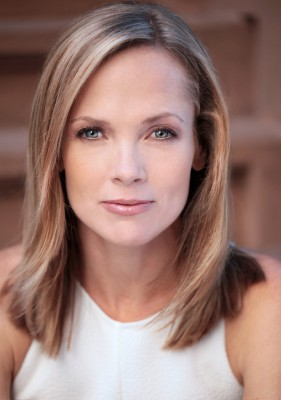

#9592 Das Alibi
 
 IMDB-Wertung: 6.5 / 10
IMDB-Wertung: 6.5 / 10  Metascore: 67
Metascore: 67 
Mary Jo Kopechne wird nur 28 Jahre alt. Sie stirbt in einem Auto das nachts von einer Brücke ins Wasser stürzt. Der Lenker kann sich befreien, nimmt jedoch erst 10 Stunden später Kontakt zur Polizei auf. Der Fahrer ist Senator Edward Kennedy, der jüngste der vier Kennedy-Brüder. Als die Öffentlichkeit von dem Unfall erfährt, hat sich bereits das gut geölte Krisenmanagement des Kennedy-Clans in Bewegung gesetzt. Denn Mary Jo hat vermutlich längere Zeit in einer Luftblase unter Wasser überlebt und hätte nicht sterben müssen…
Jahr: 2017
Dauer: 106 Minuten
FSK: 12
Land: Schweden Studio: Ascot Elite Entertainment GroupTonspuren: DTS - ,
Untertitel: Deutsch,
Auflösung: 1080p (1920x800) Größe: 6123 MB
Genre: Thriller, Drama, Geschichte
Regisseur: John Curran
Drehbuch: Taylor Allen, Andrew Logan
Soundtrack: Garth Stevenson
Darsteller:
 Jason Clarke als Ted Kennedy
Jason Clarke als Ted Kennedy Kate Mara als Mary Jo Kopechne
Kate Mara als Mary Jo Kopechne Ed Helms als Joseph Gargan
Ed Helms als Joseph Gargan Bruce Dern als Joseph Kennedy
Bruce Dern als Joseph Kennedy Jim Gaffigan als Paul Markham
Jim Gaffigan als Paul Markham Olivia Thirlby als Rachel
Olivia Thirlby als Rachel Clancy Brown als Robert McNamara
Clancy Brown als Robert McNamara Taylor Nichols als Ted Sorensen
Taylor Nichols als Ted Sorensen John Fiore als Chief Arena
John Fiore als Chief Arena- Gillian Mariner Gordon als Cricket
- Katie Henoch als Suzy
- Lexie Roth als Nance
- Angela Hope Smith als Maryellen
- Vince Tycer als David Burke
- Victor Warren als Stephen Smith
- David De Beck als Sargent Shriver
- Matthew Lawler als Dun Gifford
- Thomas Kee als Walter Steele
- Andria Blackman als Joan Kennedy
- Donald Watson als Dr. Watt
- Walter Driscoll als Dr. Mills
- Joe Chase als John Farrar
- Joseph Zamparelli als Officer Look
- Charlotte Anne Dore als Gwen Kopechne
- Tim Jackson als Joseph Kopechne
 Damien Di Paola als Ray LaRosa
Damien Di Paola als Ray LaRosa- Bill Humphreys als James Reston
- Alison Wachtler als Female Reporter
-  Tamara Hickey als Marilyn Richards
- Tom O'Brien als Neighbor's Husband
- Noah Joseph Carpenter als Teddy Jr.
- Sarah Elizabeth Mitchell als Senate Secretary
- Dustin Tucker als Senatorial Aide
- Bob Jaffe als Reporter #2
 Paul Pape als Dick Drayne
Paul Pape als Dick Drayne- Jake Head als James Smith
 Chris Edgerly als Edmund Dinis
Chris Edgerly als Edmund Dinis Wally Wingert als Newscaster
Wally Wingert als Newscaster- Piotr Michael als Newscaster
 Bill Mootos als Older Reporter
Bill Mootos als Older Reporter- Paul Taft als Photographer
- David Callanan als Charles Tretter
- Patrick Sheehan als Lawyer
- Jeff Savage als Lawyer
 Ed O'Keefe als Priest
Ed O'Keefe als Priest- Michael E. Swanson als Security Agent
- Carrie Ann Quinn als RMV Attendant
- Yasmin Sabrah als Senate TV Crew
 Frankie Imbergamo als Senate TV Crew
Frankie Imbergamo als Senate TV Crew- Lauren Feeney als Hyannis Post News Crew
Datei: X:\2017(A-F)\Alibi, Das (2017, FSK12, 1920x800).mkv seit 14.09.2018
Festplatte: HD 2017(A-Z)-2018(A-F)
 Es gibt insgesamt 152 Filme in der Gruppe '2017(A-F)'
Es gibt insgesamt 152 Filme in der Gruppe '2017(A-F)'